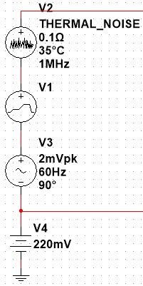
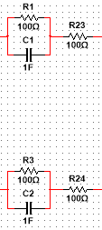
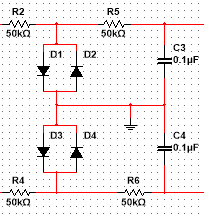
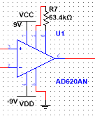
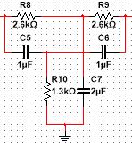
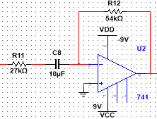
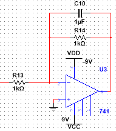
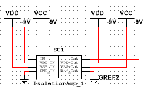
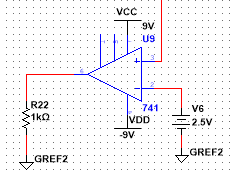

Circuits and Electronics Projects
ECG Acquisition and Heart Rate Measurement
An electrocardiogram (ECG) is a simple, non-invasive procedure that measures the heart's electrical activity. Electrodes are placed on certain areas of the body to pick up the natural electrical activity that coordinates atrial and ventricular contractions. In order to measure the electrocardiogram (ECG) of the subject, two electrodes are applied, one on the right wrist and the other on the left wrist. The two electrodes pick up on the heart's electrical activity and transmit this information to the signal filtering and amplification stage of the circuit.
A real-world unfiltered ECG signal was taken from the Physionet database and is used in this project. To simulate real-world noise that would obstruct our signal, a thermal noise generator was used to mimic thermal noise from the subject's body. A 220 mV battery was used to mimic the half-cell potential of the Ag/AgCl electrodes, and a 60 Hz power source was used to mimic the 60 Hz powerline interference from common electronics.
 To represent the electric connection between an electrode and the skin through the agency of electrolyte gel, we must have an equivalent circuit as shown on the right, showing the total electrical equivalent circuit. The dermis and the subcutaneous layer of the subject's skin under the electrodes behave in general as pure resistance.
 A protection circuit made up of diodes, capacitors, and resistors serves the purpose of preventing current from flowing back towards the patient, increasing the safety of this circuit. The diodes also provide a path for current to flow to ground in case of a power surge since the diodes only require a small voltage of ~0.7 V to become a short circuit.
 Instrumentation Amplifier provides very high common-mode rejection ratio (CMRR), meaning it filters out noisy signals that are common to both inputs (electrodes). Also provides high input impedance and is easily adjustable so gain can be changed as needed.
 Band-pass Filter is used to filter out a specific frequency of noise. In our case, we want to filter out the 60 Hz powerline interference from our signal.
 High-pass Filter is used to filter out low frequency noise below the frequency range of our signal including baseline wander/drift, such as the half-cell potential caused by the electrodes.
 A Low-pass Filter is used to filter out high frequency noise above the frequency range of our signal.
 Another electrical safety component. The Isolation Amplifier provides electrical isolation of signal acquisition, filtering and amplification stage and the signal processing stage of the circuit. Doing this allows us to have a separate power source and ground connection on each side of the isolation amplifier, which prevents the formation of ground loops and improves electrical safety for the patient.
 Finally, the Comparator is used to detect R waves in the ECG signal. The R wave peak of an ECG signal can be much greater in amplitude than the rest of the signal, meaning the reference voltage (Vref) of the comparator can be set at a value near the peak value of the R wave. Once the signal amplitude reaches the reference voltage, the comparator output flips to indicate that an R wave was detected.
Complete Circuit
Circuit Testing
Signal Output after Instrumentation Amplifier:
Signal Output after Band-pass Filter:
Signal Output after High-pass Filter:
Output is inverted since an inverting high-pass filter is used, but the signal is inverted again at the next stage so it returns to normal orientation.
Signal Output after Low-pass Filter:
Signal Output after Isolation Amplifier:
Signal Output after Comparator: